Soy un diseñador
enfocado en crear
experiencias digitales
I'm a designer
focused on create
digital experiences
Creo en el diseño como el proceso para encontrar y resolver necesidades humanas y alcanzar objetivos de negocio dando vida a productos funcionales, útiles, sostenibles y agradables.
I believe in design as the process to find and solve human needs and achieve business goals, giving life to functional, useful, beautiful and sustainable products.
PROCESO
PROCESS
understand
ideate
test
learn
entender
idear
probar
aprender
CASES
CASOS
 

Designing an A/B test to boost RappiAds campaign creations
Diseñando una prueba A/B para aumentar el número de campañas creadas en RAPPIADS
As a designer on the Rappi team, I had the opportunity to lead the design of a crucial customer acquisition project. Through A/B testing, we built two variants of the product onboarding process, with the goal of improving the conversion rate and providing an optimal user experience. The success of this project relied not only on design skills, but also on the ability to analyse data and work as a team with other team members.
Trabajando en Rappi tuve la oportunidad de liderar el diseño de un proyecto crucial para la adquisición de clientes de RappiAds. A través de una prueba A/B construimos dos variantes del flujo de incorporación al producto con el objetivo de mejorar la tasa de conversión y brindar una experiencia óptima para los usuarios. El éxito de este proyecto se basó no solo en mis habilidades de diseño, sino también en la capacidad de analizar datos y trabajar en equipo con otros miembros del equipo.


Validando una hipótesis de negocio con un MVP para Coca‑Cola Company
Validating a business hypothesis with an MVP for Coca‑Cola Company
Build an MVP is the most fast and safe way to test a hypothesis in a big company, especially if your idea implies to take some risks in your way of work, think and win.
I made part of an Agile squad (UI and Strategic Designers and Full Stack Developers) as a UX designer commissioned of understand the users, business and stakeholders needs and translate my findings into a useful product that would allow us verify our idea about a business opportunity.
Construir un MVP es la forma más rápida y segura de probar una hipótesis en una gran empresa, especialmente si su idea implica tomar algunos riesgos en su forma de trabajar, pensar y ganar.
Hice parte de un escuadrón Agil (Diseñadores de estratégia y UI, Desarrolladores Full Stack y QA Tester) como Diseñador de UX encargado de comprender las necesidades de los usuarios y el negocio y traducir mis hallazgos en un producto útil que nos permitiría verificar nuestra idea sobre una oportunidad de negocio.

Scaling up a design system to improve Sancho's employee experience
Escalando un sistema de diseño para mejorar la experiencia de los empleados de Sancho
Being the largest advertising and marketing company in Colombia and one of the biggest in the world means taking on important technological challenges. Build a software that allows the employees to manage the operative, administrative and financial tasks of the organization is one of them.
Ser la mayor empresa de publicidad y marketing de Colombia y una de las más grandes del mundo significa asumir importantes retos tecnológicos. Construir un software útil que permita a los empleados gestionar los aspectos operativos, administrativos y las tareas financieras de la organización es una de ellas.

Designing a website to transform the future of youth in rural Bogotá
Diseñando un sitio web para transformar el futuro de la juventud en Bogotá rural
Fundación Bilblioseo is a group of people who work to eradicate the mental poverty of children and young people in rural and emerging communities, educating them as Doers who lead change and serve their community in rural Bogotá. They needed a landing page and I could help them.
La Fundación Bilblioseo es un grupo de personas que trabajan por erradicar la pobreza mental de niños y jóvenes en comunidades rurales y emergentes, educándolos como Hacedores que lideren el cambio y sirvan a su comunidad en la Bogotá rural. Ellos necesitaban un landing page y yo podia ayudarlos.

ACERCA
ABOUT
I remember the world without computers and social network, but made part of the internet revolution so I grew up wanting to be a "ruler breaker".
Now I'm an urban bicycle rider, amateur digital nomad and an idealist designer that believe in my profession as a way of life to create useful experiences and not just as a job to push pixels in a screen.
Over the years I have developed different skills. I use research methods and information analysis to design human interactions and manipulate specialized software to give life to visual concepts and prototypes. I also use front-end development technologies to create interfaces.
Recuerdo el mundo sin ordenadores y sin redes sociales, pero formé parte de la revolución de Internet, así que crecí queriendo ser un "rompedor de reglas".
Ahora soy un ciclista urbano, nómada digital aficionado y un diseñador idealista que cree en mi profesión como una forma de vida para crear experiencias utiles y no sólo como un trabajo para empujar píxeles en una pantalla.
A lo largo de los años he desarrollado diferentes habilidades. Utilizo metodos de investigación y análisis de información para diseñar interacciones humanas y manipulo software especializado para dar vida a conceptos visuales y prototipos. También se utilizar tecnologias de desarrollo front-end para crear interfaces.